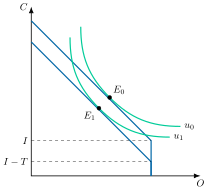
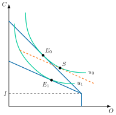
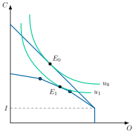
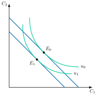
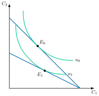
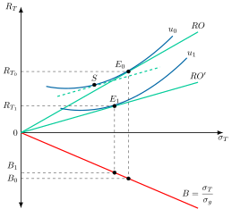
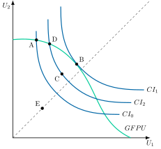
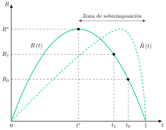

Apuntes para la oposición al Cuerpo de Diplomados Comerciales del Estado
21 Imposición y oferta. Efectos incentivos de los impuestos. Medidas de progresividad impositiva. El compromiso entre eficiencia y equidad de la política tributaria.
21.1 Introducción 1'
La Economía del Sector Público estudia cómo el Estado interviene en el mercado mediante ingresos y gastos para cumplir funciones de asignación, distribución y estabilidad. Los impuestos, como transferencias obligatorias del sector privado, son su principal herramienta.
Sin embargo, su impacto va más allá de la recaudación: afectan directamente a la oferta agregada, la inversión y el comportamiento de los agentes económicos. Por ejemplo, el llamado “impuesto al sol” en España desincentivó el autoconsumo energético.
Asimismo, el diseño progresivo del sistema fiscal influye en la equidad, al determinar cómo se distribuye la carga tributaria entre distintos niveles de renta. Este análisis es esencial para entender el compromiso entre eficiencia y equidad: un sistema impositivo eficiente minimiza distorsiones económicas, mientras que uno equitativo reparte la carga de forma justa. Encontrar el equilibrio entre ambos objetivos es el reto central de toda política fiscal moderna.
Por consiguiente, el objetivo de la presente exposición es analizar cómo el sistema impositivo cumple con las funciones del sector público y en qué medida es eficiente y equitativo a través del siguiente esquema:
Principios impositivos.
Eficiencia económica.
Equidad y medidas de progresividad.
Compromiso entre eficiencia y equidad.
21.2 Principios impositivos 1'
Comenzando con los principios impositivos, bajo la premisa de que un impuesto es un instrumento que se utiliza para la maximización del bienestar de la sociedad, existe un acuerdo sobre las condiciones que debe reunir un buen sistema tributario. Las más importantes son:
Eficiencia económica, esto es, hasta qué punto interfiere o no en el proceso de libre elección de los contribuyentes y les fuerza –o no– a tomar decisiones inadecuadas desde el punto de vista de la asignación de recursos.
Justicia fiscal o equidad, los impuestos han de ser, idealmente, equitativos. La distribución de la carga se basa en diferentes principios. De entre ellos, los que han tenido una mayor importancia en la literatura hacendística son el beneficio, la capacidad de pago, la utilidad y el consumo.
Sencillez administrativa, implica que el sistema fiscal debe ser lo más sencillo posible, para lo cual se aconseja que haya pocos impuestos con base muy amplia, reglas sencillas de valoración, y pocos casos particulares.
Flexibilidad, implica que los impuestos deben adaptarse al contexto económico, facilitando así su tarea de estabilizadores automáticos de la economía.
Suficiencia, implica que la recaudación debe ser apropiada para cubrir los gastos planeados del sector público.
No obstante, a menudo estos principios entran en conflicto entre sí, por lo que el diseño de un sistema fiscal es un ejercicio de compromiso entre principios que pueden llegar a ser contradictorios.
21.3 Eficiencia económica 10'30"
Centrando el análisis en la eficiencia económica, los impuestos afectan a la conducta económica de los agentes sobre los que recae. Atendiendo a los efectos en términos de eficiencia, se distingue entre:
Impuestos distorsionantes, aquellos cuya cuantía puede reducir el contribuyente cambiando su conducta, de modo que alteran los precios relativos a los que se enfrenta y, con ellos, sus decisiones.
Impuestos no distorsionantes, aquellos cuya cuantía no depende de ninguna decisión del contribuyente, de modo que no alteran los precios relativos y solo generan un efecto renta. Este es el caso de los impuestos de suma fija o tanto alzado, esto es, una detracción de renta de cuantía fija a los contribuyentes.1
Desde el punto de vista de la economía del bienestar, los impuestos distorsionantes son ineficientes ya que al afectar a los precios relativos afectarán a las decisiones de consumo y producción. El resultado es una alteración de las condiciones de eficiencia y una generación de exceso de gravamen.
Sin embargo, normalmente se utilizan los impuestos distorsionantes porque los impuestos de suma fija no tienen en cuenta aspectos de equidad, lo que podría ser socialmente inaceptable2. Por ello, el objetivo será minimizar el impacto en la eficiencia de los impuestos distorsionantes a la hora de cumplir las funciones del sector público.
Reglas de imposición eficiente
Cuando la eficiencia es el único criterio de valoración, se define como sistema impositivo óptimo aquel que logra la recaudación requerida minimizando el exceso de gravamen total, entendiendo este como la pérdida de bienestar que causan los impuestos distorsionantes por encima de lo que recaudan.
Matemáticamente es un problema de minimización del exceso de gravamen, \(EG\), definido como, \(-1/2\)3 por el sumatorio de \(n\) bienes de consumo, multiplicado por el cambio en la demanda compensada de \(i\) al variar el precio de \(j\) o efecto sustitución entre los bienes \(i\) y \(j\), \(S_{ij}\), por los precios del bien \(i\) y del bien \(j\) y por los tipos impositivos de dichos bienes:
\[\begin{aligned} \min\quad EG & =-\dfrac{1}{2}\cdot\sum\limits_{i=1}^{n}\sum\limits_{j=1}^{n}S_{ij}\cdot p_{i}\cdot p_{j}\cdot t_{i}\cdot t_{j} \end{aligned} \tag{21.1}\]
sujeto a la recaudación requerida, \(\bar{T}\)
\[\bar{T}=\sum\limits_{i=1}^{n}t_{i}\cdot p_{i}\cdot X_{i} \tag{21.2}\]
La resolución de este problema permite establecer una serie de reglas de imposición eficiente:
Regla de elección excluyente, cuando se pueda elegir entre 2 impuestos, el mejor será aquel que grave el bien con la demanda compensada más inelástica. Esto se debe a que el exceso de gravamen producido por la introducción de un impuesto distorsionante será menor cuanto más inelástica sea la demanda.
Regla de igualación de distorsiones marginales –equimarginalidad–: si no se puede excluir entre bienes, es deseable gravarlos todos, con tipos que igualen el exceso de gravamen marginal por unidad monetaria recaudada en todos los impuestos.4 La excepción se dará con un bien con una demanda totalmente inelástica y que proporcione una base suficientemente amplia.
Regla de la elasticidad inversa –planteada por Pigou y formalizada por Ramsey (1927)5–: si los efectos renta y los efectos sustitución cruzados son nulos, es decir, si los bienes son independientes, los tipos impositivos que minimizan el exceso de gravamen son inversamente proporcionales a las respectivas elasticidades-precio de las demandas, que en ese caso coinciden con las de las demandas compensadas. Por lo tanto, se deben gravar los bienes cuyas demandas sean más inelásticas6.
Regla de Corlett-Hague (Corlett y Hague 1953): como el ocio no puede gravarse, deben gravarse más los bienes complementarios del ocio y menos los sustitutivos del ocio, para reducir la distorsión sobre la oferta de trabajo.7
Regla de Ramsey-Diamond-Mirrlees (Ramsey 1927; Diamond y Mirrlees 1971), también llamada regla de Ramsey o de la reducción equiproporcional, estos autores generalizan la regla de la elasticidad inversa para que se pueda aplicar a mercados generales en los que existan relaciones de complementariedad y sustituibilidad. Llegan a la conclusión de que un sistema impositivo es óptimo si, tras su aplicación, disminuyen todas las demandas compensadas de forma equiproporcionada8. La regla de la elasticidad inversa es el caso particular en el que los bienes son independientes.
Efectos desincentivo de los impuestos sobre la oferta
Una vez analizadas las reglas de imposición eficiente, se van a analizar los efectos desincentivo de los impuestos sobre la oferta.
Oferta de trabajo
Comenzando con la oferta de trabajo, esta se va a obtener a través de un problema maximizador de la utilidad, \(u\), que le reporta el nivel de consumo, \(C\), y el nivel de ocio, \(O\): \[\max\quad u\left(C,O\right) \tag{21.3}\] sujeto a \[C=w\cdot L+I-T \tag{21.4}\] donde \(I\) representa las rentas no salariales, \(T\) el impuesto de suma fija y \(L=\bar{L}-O\) las horas trabajadas, siendo \(\bar{L}\) el tiempo total disponible.
Gráficamente, en un plano de consumo, \(C\), y ocio, \(O\), como el de la Figura 21.1 (a), se representa la restricción presupuestaria9 y la curva de indiferencia tangente, dando lugar un equilibrio como \(E_{0}\).
Impuesto de suma fija
El establecimiento de un impuesto de suma fija va a producir un efecto renta puro, desplazando la restricción presupuestaria paralelamente hacia el interior en la cuantía \(T\), sin variar su pendiente, \(-w\), ni el tiempo total disponible, \(\bar{L}\). Se llega así a un equilibrio como \(E_{1}\) en el que, si el ocio es un bien normal, disminuye el nivel de ocio y aumentan las horas trabajadas, por lo que el impuesto incentiva el trabajo.
Impuesto proporcional
Por otro lado, si se establece un impuesto proporcional, \(\tau_{L}\), sobre las rentas salariales como el de la Figura 21.1 (b), la restricción ( 21.4) cambiaría: \[C=\left(1-\tau_{L}\right)\cdot w\cdot L+I \tag{21.5}\] Su pendiente pasa de \(-w\) a \(-\left(1-\tau_{L}\right)\cdot w\), y la restricción pivota en torno al punto de no trabajar, \(\left(\bar{L},I\right)\), generando dos efectos:
Efecto renta, ya que el impuesto reduce la renta disponible y, si el ocio es un bien normal, disminuye su consumo, como el de los demás bienes normales, por lo que aumenta la oferta de trabajo.
Efecto sustitución –en el punto \(S\), que se obtiene de trasladar la nueva restricción a la antigua curva de indiferencia–, ya que al disminuir el salario neto, disminuye el coste de oportunidad del ocio, lo que aumentará el ocio y disminuirá la oferta de trabajo.
Por lo tanto, dependiendo de cuál de los dos efectos predomine el efecto será incentivador o desincentivador sobre la oferta de trabajo10.
Impuesto progresivo
Por último, si el impuesto es progresivo sobre las rentas salariales como el de la Figura 21.1 (c), el tipo marginal crece con la renta. A modo de ejemplo, se consideran tres tramos con tipos \(\tau_{Pr,1}<\tau_{Pr,2}<\tau_{Pr,3}\), de modo que la restricción presupuestaria es \[C=w\cdot L+I-T\left(w\cdot L\right),\quad\text{con }T^{\prime}\left(w\cdot L\right)=\tau_{Pr,k}\text{ en el tramo }k \tag{21.6}\] donde \(T\left(\cdot\right)\) es la función del impuesto. La restricción deja de ser una recta y pasa a tener en cada tramo una pendiente \(-\left(1-\tau_{Pr,k}\right)\cdot w\), cada vez más plana, de modo que cada hora adicional se grava más que la anterior (Rosen y Gayer 2010, 418). El número de tramos es solo ilustrativo, ya que el razonamiento vale igual para más o para menos. En el caso dibujado, el equilibrio pasa de \(E_{0}\) a \(E_{1}\) con menos consumo y más ocio, por lo que se reduce la oferta de trabajo. Frente a un impuesto proporcional que recaude lo mismo, el efecto sustitución se refuerza, pero también se refuerza el efecto renta, por lo que el efecto general es ambiguo. No obstante, salvo que la oferta de trabajo tenga una pendiente muy negativa, lo más probable es que se reduzca, y la pérdida irrecuperable de eficiencia aumenta con el tipo marginal (Stiglitz y Rosengard 2015).
Limitaciones del análisis
Sin embargo, el análisis anterior tiene una serie de limitaciones (Atkinson y Stiglitz 2015):
El modelo supone que se pueden elegir horas trabajadas libremente, cuando normalmente existen restricciones de las horas que se pueden trabajar.
Puede que el ocio sea un bien inferior y no normal para algunos individuos, en cuyo caso el efecto renta y el efecto sustitución actuarían en el mismo sentido.11
Según algunos autores, el análisis sería más adecuado en términos de esfuerzo o desutilidad.
Es un modelo estático, cuando las decisiones de trabajo se adoptan para un horizonte temporal.
No considera la incertidumbre ni las imperfecciones en el mercado de trabajo.



Imposición y ahorro
Por otro lado, parte de la renta puede ahorrarse, por lo que se va a analizar qué efectos tiene la introducción de un impuesto sobre las rentas del ahorro en un modelo de ciclo vital de dos periodos, base de los modelos de generaciones solapadas (Albi et al. 2018), para un agente que vive 2 periodos y que solo obtiene ingresos salariales fijos en el periodo 1, no recibiendo ni dejando herencias.
Las decisiones de ahorro son un fenómeno intertemporal, por lo que se va a plantear un problema maximizador de la utilidad que le reporta el consumo tanto en el momento presente, \(C_{1}\), como en el momento futuro, \(C_{2}\), ponderado por un factor de descuento, \(\beta\), menor que 1 que indica el grado de impaciencia en el tiempo, por lo que la tasa de descuento, \(\rho\), es superior a 0: \[\max\quad u\left(C_{1}\right)+\beta\cdot u\left(C_{2}\right),\quad\beta=\dfrac{1}{1+\rho}<1 \tag{21.7}\] sujeto a una restricción presupuestaria, donde el consumo en el presente, \(C_{1}\), sumado al consumo en el futuro descontado al tipo de interés presente, \(\dfrac{C_{2}}{1+r}\), es igual a la renta disponible, \(w\) \[C_{1}+\dfrac{C_{2}}{1+r}=w\] donde \(r\) representa el tipo de interés.
Las CPO de este problema establecen la ecuación de Euler, según la cual el individuo debe consumir hasta que la relación marginal de sustitución entre ambos consumos, \(RMS_{C_{1},C_{2}}\), que es el cociente entre la utilidad marginal del consumo presente y la del consumo futuro, se iguale al cociente entre uno más el tipo de interés y uno más la tasa de descuento:12 \[RMS_{C_{1},C_{2}}=\dfrac{1+r}{1+\rho} \tag{21.8}\]
Gráficamente, en un plano consumo presente, \(C_{1}\), y consumo futuro, \(C_{2}\), como el de la Figura 21.2 (a), se parte de una situación de equilibrio, \(E_{0}\), que se da en el punto de tangencia entre la restricción presupuestaria y la curva de indiferencia más alejada del origen, \(u_{0}\).
Impuesto sobre el consumo
Si se establece un impuesto sobre el consumo con el mismo tipo en ambos periodos, la restricción presupuestaria se desplaza paralelamente hacia el origen, ya que no altera el precio relativo del consumo futuro. Se produce, por tanto, solo un efecto renta, que reduce el consumo presente y el futuro hasta un nuevo equilibrio, \(E_{1}\) (Atkinson y Stiglitz 2015; Stiglitz y Rosengard 2015). Si ambos consumos son bienes normales, el consumo presente cae menos que la renta, por lo que el ahorro disminuye.
Impuesto sobre el trabajo
De la misma forma que en el análisis de la oferta de trabajo, un impuesto sobre las rentas salariales equivale a un impuesto a tanto alzado o de suma fija, dado que la oferta de trabajo es inelástica. Cuando no hay herencias, equivale también a un impuesto sobre el consumo (Stiglitz y Rosengard 2015). Es decir, solo genera efecto renta y, por tanto, se reduce el consumo tanto en el primer periodo como en el segundo, y el ahorro disminuye.


Impuesto sobre el ahorro
Por otro lado, si se establece un impuesto sobre los rendimientos del ahorro como el de la Figura 21.2 (b), la restricción presupuestaria pivotaría hacia abajo, estableciendo un nuevo equilibrio en \(E_{1}\). De esta manera, se producen 2 efectos sobre el consumo presente:
Efecto sustitución, ya que al disminuir los tipos de interés el consumo futuro se encarece aumentando el consumo presente y, por lo tanto, disminuyendo el nivel de ahorro.
Efecto renta, ya que al disminuir los tipos de interés si se supone que los individuos son acreedores, disminuirá su riqueza por lo que disminuirá el consumo tanto presente como futuro, aumentando los niveles de ahorro.
El efecto total sobre el ahorro es, por tanto, indeterminado, aunque el consumo futuro disminuirá13.
Impuestos y deuda pública
Finalmente, cabe señalar que los impuestos afectan al ahorro pero también a la deuda pública. Así, tal y como analiza la equivalencia ricardiana (Barro 1974), una reducción de los impuestos en el período presente financiada con un aumento de la deuda pública, que dará lugar a mayores impuestos futuros para pagar esa deuda, no altera las decisiones de consumo y ahorro si los agentes prevén esos impuestos futuros y están conectados con las generaciones futuras por una cadena de transferencias intergeneracionales –como herencias o donaciones–, y si, además, los mercados de capital son perfectos y los impuestos son de suma fija.
Imposición y asunción de riesgos
Por otro lado, el grado óptimo de asunción de riesgos también puede verse distorsionado al introducir un impuesto. Normalmente un individuo puede invertir su ahorro en diferentes activos, que ofrecen diferentes tasas de rendimiento y diferentes niveles de riesgo.
Para analizarlo se utilizará una versión simplificada del modelo de cartera de Tobin (Tobin 1958).
En este modelo, un individuo racional buscará la maximización de rendimientos con el mínimo riesgo.
Teniendo en cuenta que los individuos pueden dividir su riqueza en forma de demanda de bonos y demanda de dinero, la rentabilidad esperada de la cartera, \(R_{T}\), si una proporción \(B\) de la riqueza se invierte en bonos, es: \[R_{T}=B\cdot\left(g+r\right) \tag{21.9}\] donde el rendimiento se compone del tipo de interés, \(r\), que ofrecen los bonos y la ganancia esperada de capital, \(g\), que se puede obtener por la variación del precio de los bonos. El dinero ni rinde ni tiene riesgo.
Por lo tanto un individuo se enfrentará al siguiente problema de maximización de la utilidad que dependerá positivamente del rendimiento, \(R_{T}\), y negativamente del riesgo de la cartera, \(\sigma_{T}\): \[\max\quad u\left(R_{T},\sigma_{T}\right) \tag{21.10}\] sujeto a la restricción que relaciona rendimiento con riesgo, que es proporcional al de las ganancias o pérdidas de capital de los bonos, \(\sigma_{g}\), es decir, \(\sigma_{T}=B\cdot\sigma_{g}\), de modo que: \[R_{T}=\dfrac{\sigma_{T}}{\sigma_{g}}\cdot\left(g+r\right) \tag{21.11}\]
Gráficamente, en un plano de riesgo en cartera y rendimiento en cartera como el de la Figura 21.3 en primer lugar la recta de oportunidades de inversión, \(RO\), y, en segundo lugar, las curvas de indiferencia, \(u_{0}\), que serán convexas porque se asume que los individuos son aversos al riesgo, representando un mayor bienestar cuando se desplacen hacia arriba y hacia la izquierda ya que el rendimiento es un “bien” y el riesgo es un “mal”. El punto de equilibrio vendrá determinado por el punto de tangencia de la recta de oportunidades de inversión y la curva de indiferencia más alejada del eje de abscisas en \(E_{0}\). Por otro lado, se utilizará la inversa del riesgo de mercado para analizar cómo distribuyen los individuos su riqueza entre demanda de bonos y demanda de dinero.

En este contexto, si se introduce un impuesto sobre los rendimientos que no permite deducir las pérdidas, la recta de oportunidades de inversión pivotará hacia la derecha con una menor pendiente, estableciendo un nuevo equilibrio en el que la rentabilidad será menor. Para analizar el efecto sobre el riesgo hay que considerar 2 efectos:
Efecto sustitución, al disminuir los rendimientos el dinero será más barato, aumentando la demanda de dinero y disminuyendo la demanda de bonos, por lo tanto con un riesgo menor asociado.
Efecto renta, al disminuir los rendimientos, suponiendo que los individuos son acreedores, disminuirá su riqueza o sus recursos, disminuyendo la demanda de dinero y aumentando la demanda de bonos, es decir, con un mayor riesgo asociado.
Por lo tanto, el efecto sobre el riesgo dependerá de cuál de los 2 efectos predomine.
En cambio, si existe derecho a deducción de pérdidas, el Estado se convierte en un socio que comparte tanto las ganancias como las pérdidas. El impuesto reduce entonces el rendimiento y el riesgo que soporta el inversor en la misma proporción, de modo que la recta de oportunidades de inversión no cambia de pendiente y desaparece el efecto sustitución. Queda solo el efecto renta, que lleva a asumir más riesgo para recuperar la renta perdida. Por tanto, cuando el dinero no rinde, como en este modelo, el riesgo total asumido aumenta (Domar y Musgrave 1944). Si el activo sin riesgo tuviera rendimiento, el resultado sería indeterminado (Albi et al. 2018).
Imposición e inversión de las empresas
Hasta ahora se han analizado las decisiones de los hogares. Las empresas también ven alteradas las suyas, ya que el impuesto sobre el beneficio de las sociedades afecta a su inversión. Una empresa invierte en capital hasta que el valor del producto marginal del capital iguala su coste de uso, es decir, el tipo de interés más la depreciación (Hall y Jorgenson 1967). Si el impuesto grava el beneficio y permite deducir todos los costes, incluido el de financiación, es neutral y no altera la decisión de inversión. Sin embargo, en la práctica no se deduce el coste de los fondos propios, por lo que sube el coste de uso del capital y se reduce la inversión (Rosen y Gayer 2010).
Imposición y cumplimiento fiscal
Por último, los impuestos también afectan al cumplimiento fiscal. Los contribuyentes pueden reducir su carga por vías ilegales, la evasión, o legales, la elusión. En la evasión, el contribuyente decide cuánta renta declara, y la decisión depende de la probabilidad de que lo detecten y de la penalización. Aumentar cualquiera de las dos reduce la evasión, mientras que el efecto del tipo impositivo es ambiguo (Allingham y Sandmo 1972). Además, la evasión es muy baja en la renta sobre la que informan terceros, como los salarios, y mayor en la renta autodeclarada (Kleven et al. 2011).
21.4 Equidad 4'
Por otro lado, un buen sistema impositivo debe cumplir ciertos criterios de justicia o equidad. El problema es que el concepto de justicia no es compartido generalmente. La equidad se puede interpretar de varias formas:
Aplicando el criterio de beneficio, según el cual cada individuo debe pagar impuestos en función del beneficio que obtiene de los bienes públicos. En su versión más conocida, la de Lindahl, cada individuo paga por unidad de bien público un precio fiscal igual a su beneficio marginal, y la suma de esos precios cubre el coste marginal del bien. El problema de este método es que el sector público depende de que los individuos revelen sus preferencias y que, además, ignora la redistribución.
Aplicando el principio de capacidad de pago, que tiene a su vez 2 interpretaciones:
Equidad horizontal, quienes tienen la misma capacidad de pago deben pagar los mismos impuestos.
Equidad vertical, quienes tienen mayor capacidad de pago deben pagar más impuestos, en una proporción que depende de la concepción de justicia que se adopte.14
Aplicando el principio de utilidad, que reemplaza el nivel de renta por el nivel de utilidad. Resuelve algún problema teórico, pero es difícil o imposible cuantificar la utilidad y compararla entre individuos (Pascual y Sarabia 2003).
Aplicando el principio del consumo, según el cual solo se grava la parte de la renta que se consume y no la que se ahorra, ya que así se impone lo que el individuo obtiene de la sociedad y no lo que aporta. Pero tendería a pagar más, en proporción, quien consume una parte mayor de su renta, de modo que los estratos de renta baja, que no pueden ahorrar, pagarían un porcentaje mayor que los ricos (Pascual y Sarabia 2003).
Centrando la atención en el criterio de equidad vertical, será preciso determinar el grado de progresividad del sistema tributario.
Un sistema tributario será progresivo si el tipo medio crece al hacerlo su base imponible.
No obstante, aunque existe unanimidad en torno a la definición, algunos autores asocian el criterio de progresividad a un impacto redistributivo, de ahí que existan diferentes indicadores de progresividad.
A continuación, se va a distinguir entre índices de progresión local o estructural, que solo van a tener en cuenta la estructura impositiva, e índices de concentración, que también tendrán en cuenta aspectos redistributivos.
Índices de progresión local o estructural
El enfoque de la progresividad local define una medida de progresividad, \(p\left(T\left(y\right)\right)\), en cada punto, \(y\), de la función de impuestos, \(T\left(\cdot\right)\). Entonces, una función es más progresiva que otra si es más progresiva en todos los puntos, esto es, \(T_{1}\left(y\right)\) es más progresivo que \(T_{2}\left(y\right)\) si: \[p\left(T_{1}\left(y\right)\right)>p\left(T_{2}\left(y\right)\right),\quad\forall y\]
Musgrave y Thin (1948) propusieron 4 medidas alternativas de progresividad local:
Progresión del tipo medio, \(PTME\), evalúa la progresividad de una función en un punto por la pendiente del tipo medio, \(tme\), que es igual a la diferencia entre el tipo marginal, \(tmg\), y el tipo medio dividida por la renta, \(y\): \[PTME=\dfrac{d\left(tme\left(y\right)\right)}{dy}=\dfrac{tmg\left(y\right)-tme\left(y\right)}{y} \tag{21.12}\] por lo que una función es progresiva si, para todo \(y\), \(PTME\) es mayor que cero, igual a cero sería proporcional e inferior a cero sería regresivo. Así, un aumento de \(PTME\) implica un aumento de la progresividad según esta definición.
Progresión del tipo marginal, \(PTMA\), mide el crecimiento del tipo marginal en cada punto de la función de impuestos \[PTMA=\dfrac{d\left(tmg\left(y\right)\right)}{dy} \tag{21.13}\]
Sin embargo, este índice ha recibido fuertes críticas porque, por ejemplo, si un impuesto tiene tipos marginales constantes –por ejemplo, un impuesto lineal con tipo único y mínimo exento–, esta medida indica que el impuesto es proporcional cuando no lo es. Por esta razón no se considera un buen índice de progresividad.
Progresión de la carga o elasticidad impositiva –elasticidad de los impuestos pagados en relación a la renta antes de impuestos–, \(PC\), mide, en cada punto, en qué porcentaje aumentan los impuestos pagados cuando la renta antes de impuestos aumenta en un 1 %, y es igual al cociente entre el tipo marginal y el tipo medio: \[PC=\dfrac{tmg\left(y\right)}{tme\left(y\right)} \tag{21.14}\] por lo que una función es progresiva si, para todo \(y\), \(PC\) es mayor que 1, igual a 1 sería proporcional e inferior a 1 sería regresivo. Así, un aumento de \(PC\) implica un aumento de la progresividad según esta definición.
Progresión residual –elasticidad de la renta después de impuestos en relación a la renta antes de impuestos–, \(PRR\), mide, en cada punto, en qué porcentaje aumenta la renta después de impuestos cuando la renta antes de impuestos aumenta en un 1%: \[PRR=\dfrac{1-tmg}{1-tme} \tag{21.15}\] por lo que si, para todo \(y\), PRR es inferior a 1, el impuesto es progresivo –igual a 1 sería proporcional y superior a 1 regresivo–. Esto significaría que un aumento de un 1 % en la renta antes de impuestos implica un aumento de menos del 1 % en la renta después de impuestos. Así, una reducción de \(PRR\) conlleva un aumento de la progresividad.15
Índices de concentración
Por otro lado, se pueden utilizar los índices de concentración:
Índice de Gini, que mide la desigualdad de una distribución como su distancia respecto a un reparto igualitario. Se obtiene a partir de la curva de Lorenz (Albi et al. 2018), que relaciona el porcentaje acumulado de la población, \(X\%\), ordenada de menor a mayor renta, con el porcentaje acumulado de la renta que le corresponde, \(Y\%\), como se observa en la Figura 21.4. El índice es el área comprendida entre la recta de perfecta igualdad y la curva de Lorenz dividida por el área total bajo esa recta. Si el índice de Gini es 0, la igualdad será absoluta y si es 1, un solo individuo dispondrá de todos los recursos.
Coeficiente de concentración, que, a diferencia del índice de Gini, ordena a los individuos por su renta antes de impuestos y mide cuánto se concentra otra magnitud –las cuotas del impuesto, \(T\), o la renta después de impuestos, \(X-T\)– en los de mayor renta. Si \(L_{T}\left(p\right)\) es la curva de concentración de las cuotas, es decir, el porcentaje acumulado del impuesto pagado por el porcentaje \(p\) de la población más pobre, el coeficiente es (Pascual y Sarabia 2003): \[C_{T}=1-2\int^{1}_{0}L_{T}\left(p\right)dp\]
Índices agregados, que comparan la distribución de la renta antes de impuestos con la distribución después de impuestos o con el reparto de las cuotas
Índice de Musgrave y Thin (1948), se obtiene a partir del índice de Gini antes de impuestos \(G_{X}\), y el índice de Gini después de impuestos \(G_{X-T}\): \[I_{MT}=\dfrac{1-G_{X-T}}{1-G_{X}}=1+\dfrac{G_{X}-G_{X-T}}{1-G_{X}} \tag{21.16}\] si el impuesto es progresivo entonces \(I_{MT}>1\).
Índice de Pechman y Okner (1974), se basa en la medición de la progresividad de un impuesto a partir de la reducción porcentual de la desigualdad medida a través del índice de Gini, y viene dado por \[I_{PO}=\dfrac{G_{X}-G_{X-T}}{G_{X}}\] por lo que el impuesto corrige la desigualdad si \(I_{PO}>0\) y la empeora si \(I_{PO}<0\) (Albi et al. 2018).
Índice de Reynolds-Smolensky (1977), que mide el efecto redistributivo de un impuesto como la reducción absoluta del índice de Gini que produce, es decir, la diferencia entre el Gini antes de impuestos, \(G_{X}\), y el Gini después de impuestos, \(G_{X-T}\) (Albi et al. 2018): \[I_{RS}=G_{X}-G_{X-T} \tag{21.17}\] por lo que el impuesto será redistributivo si \(I_{RS}>0\).16
Índice de Kakwani (1977), que se basa en la desviación respecto de la proporcionalidad que conlleva el reparto de las cargas impositivas: \[K=C_{T}-G_{X}\] Cuanto más se aproxime \(K\), si es positivo, a su valor máximo, \(1-G_{X}\), más progresivo será el impuesto, mientras que los valores negativos indican regresividad.
21.5 Compromiso entre eficiencia y equidad 3'
Por último, haciendo referencia al compromiso entre la eficiencia y la equidad, en rigor, el análisis de la eficiencia es plenamente aplicable solo si las cuestiones distributivas son irrelevantes. Esto solo ocurriría si la economía estuviera formada por un solo individuo o múltiples individuos idénticos.
Sin embargo, si se introducen criterios de igualdad habrá que plantear un problema maximizador del bienestar: \[\max\quad W\left(u_{1},\ldots,u_{n}\right) \tag{21.18}\]
donde \(W\left(\cdot\right)\) es una función de bienestar social, \(FBS\), de tipo Bergson, que agrega las utilidades individuales, \(u_{i}\), e incorpora juicios de valor sobre la distribución de recursos en la sociedad. La maximización está sujeta a la siguiente restricción \[T\left(x,p,\tau\right)=\bar{T} \tag{21.19}\] donde \(T\left(\cdot\right)\) es una función impositiva que relaciona los vectores de precios, \(p\), y demandas, \(x\), con el conjunto de instrumentos impositivos de los que dispone la autoridad fiscal, \(\tau\), y que permite obtener el nivel de recaudación, \(\bar{T}\). El sistema impositivo óptimo es el que, obteniendo esa recaudación, maximiza el bienestar social, aunque para ello tenga que aceptar un mayor coste de eficiencia a cambio de una distribución más igualitaria.
En un sistema ideal, redistribuir no debería acarrear necesariamente costes de eficiencia. Como afirma el segundo teorema de la economía del bienestar, bajo supuestos de competencia perfecta se podría alcanzar la meta redistributiva sin costes de eficiencia mediante transferencias de suma fija.
Análisis gráfico
Gráficamente, en un plano de utilidades de dos individuos 1 y 2, \(U_{1}\) y \(U_{2}\), como el de la Figura 21.5, se representa la Gran Frontera de Posibilidades de Utilidad, \(GFPU\),17 para 2 individuos, que refleja la utilidad máxima que puede alcanzar uno dada la utilidad del otro; y las Curvas de Indiferencia Social, \(CI\), asociadas a las Funciones de Bienestar Social. Además, se representa la bisectriz, que contiene los puntos en los que ambos individuos alcanzan la misma utilidad.

De esta forma:
Inicialmente, dado el conjunto de impuestos, se parte de un equilibrio como \(A\), sobre la curva de indiferencia original, \(CI_{0}\), que es eficiente dado que se sitúa sobre la \(GFPU\) pero no maximiza el bienestar social, cuyo máximo se alcanza en el punto \(B\), sobre la curva ideal, \(CI_{1}\), el denominado óptimo social, y que es socialmente preferido.
Para llegar al punto \(B\), se aplicará el Segundo Teorema del Bienestar, por lo que se podrá alcanzar dicho óptimo social \(B\) mediante impuestos de suma fija sin resentir la eficiencia.
Sin embargo, el uso de estos impuestos es limitado debido a problemas de información, por lo que se utilizarán impuestos distorsionantes que permitirán alcanzar la asignación \(C\) que es socialmente preferida a \(A\) –se encuentra en la curva a la que se llega, \(CI_{2}\), más alejada del origen que \(CI_{0}\)– pero ineficiente –dado que se sitúa por debajo de la \(GFPU\), siendo \(D\) un punto eficiente asociado a la misma \(CI_{2}\)–.
De esta forma existe un “trade-off” entre objetivos de eficiencia y equidad que la política impositiva no puede ignorar.
Además, podría llegar un punto en el que si el gobierno quiere continuar con la redistribución puede que los beneficios sociales en equidad no superen a los costes en términos de eficiencia económica y la economía se acabe situando en \(E\), que sería un punto de perfecta igualdad entre los individuos 1 y 2.
21.6 Conclusiones 30"
Como conclusión, la política tributaria enfrenta una tensión estructural entre eficiencia económica y equidad distributiva. Un sistema eficiente debe minimizar las distorsiones que los impuestos generan sobre la oferta de bienes y servicios, la inversión y el comportamiento de los agentes económicos. Sin embargo, esta búsqueda no puede ignorar la equidad, que se persigue mediante la progresividad fiscal: un diseño tributario que asigna una carga creciente con la capacidad de pago.
A ello se suma el reto de combatir la evasión y elusión fiscal, que erosionan la base imponible y pueden debilitar la progresividad del sistema. Para abordar estos desafíos, se requiere un enfoque dual: positivo, que analice los efectos reales de los impuestos, y normativo, que proponga reformas orientadas a corregir fallos de mercado y mejorar el bienestar social.
Solo si se logra un buen equilibrio entre eficiencia, equidad y cumplimiento fiscal, se puede construir un sistema de impuestos que funcione bien y sea justo para todos.
Apéndice
21.A.1. Problemas de la imposición óptima
Las reglas de imposición óptima presentan algunos problemas, ya que pueden entrar en contradicción o no tener en cuenta la equidad.
Las reglas pueden entrar en contradicción entre ellas.
Pan:
Las reglas de Ramsey y de la elasticidad inversa aconsejan gravarlo mucho porque su demanda es bastante inelástica.
La regla de Corlett-Hague aconseja gravarlo poco porque no es un bien complementario del ocio.
Hoteles, restaurantes:
Las reglas de Ramsey y de la elasticidad inversa aconsejan gravarlo poco porque sus demandas son bastante elásticas.
La regla de Corlett-Hague aconseja gravarlo mucho porque son bienes complementarios del ocio.
No obstante, en ciertos casos las reglas coinciden. Es el caso del alcohol o el tabaco:
Las reglas de Ramsey y de la elasticidad inversa aconsejan gravarlos mucho porque sus demandas son muy inelásticas.
La regla de Corlett-Hague aconseja gravarlo mucho porque son bienes complementarios del ocio.
Las reglas no tienen en cuenta la equidad:
Si, por ejemplo, comparamos el pan y el caviar, según las reglas de la imposición óptima el pan debe gravarse mucho porque su demanda es inelástica, mientras que el caviar debe gravarse poco porque su demanda es muy elástica.
Esta recomendación favorece la eficiencia, pero no tiene en cuenta la función redistribuidora que debe perseguir todo sistema fiscal.
Por lo tanto, un sistema fiscal, para ser considerado óptimo en su conjunto, debería tener en cuenta tanto la eficiencia como la equidad.
21.A.2. Impuesto sobre el valor del suelo
El impuesto sobre el valor del suelo –Land Value Tax, LVT– grava el valor del suelo y no el de lo construido sobre él. Su principal defensor histórico fue Henry George, quien en “Progreso y miseria” (1879) propuso sustituir los impuestos sobre el trabajo y el capital por un único impuesto sobre el valor del suelo, bajo la idea de que la renta del propietario no responde a ningún esfuerzo productivo (Gruber 2016, 736). Economistas de diferentes escuelas lo han defendido por su eficiencia, como Adam Smith18, Milton Friedman, que lo calificó de “el menos malo de los impuestos” (Fox 2017), o Paul Krugman, quien considera que los modelos de economía urbana respaldan este impuesto al menos para financiar el crecimiento de las ciudades, aunque no recaudaría lo bastante para sostener un Estado del bienestar moderno (Moore 2009).
La razón es que la oferta de suelo es fija, de modo que el impuesto no la reduce ni altera las decisiones de los agentes, y la carga recae sobre el propietario (Stiglitz y Rosengard 2015). Además, como no depende de lo que se construya, cuanto más se aprovecha el suelo, por ejemplo con más viviendas, menor es la carga en términos relativos. Eso incentiva a ofrecer más vivienda, lo que puede contribuir a reducir los precios (Arenas 2024; Fox 2017).
El impuesto grava el valor potencial del suelo y no los incrementos que resultan de las mejoras del propietario. La hipótesis es que ese valor se debe a circunstancias ajenas a la propiedad, habitualmente a la inversión pública, como la peatonalización de una calle o una estación de metro. Por tanto, redistribuye a la sociedad las externalidades positivas de las infraestructuras y los servicios públicos que revalorizan el suelo (Arenas 2024). En modelos de bienes públicos locales, las rentas del suelo igualan el gasto público óptimo, resultado conocido como teorema de Henry George (Atkinson y Stiglitz 2015).
También puede ser progresivo, porque los propietarios suelen tener mayor capacidad económica, y es difícil de eludir por deslocalización, ya que el suelo no se puede trasladar a otra jurisdicción (Arenas 2024). Además, su justificación moral, la idea de que el suelo es de todos y de que sus frutos deben repercutir en la sociedad, puede ayudar a justificarlo políticamente (Arenas 2024).
La experiencia de Pittsburgh apunta en esa dirección, aunque con matices. En 1979-1980 pasó a gravar el suelo a un tipo más de cinco veces superior al de las construcciones, y en los años ochenta la edificación aumentó muy por encima de la de otras ciudades de la región. Según Oates y Schwab (1997), el principal impulso fue la escasez de espacio comercial, y la mayor imposición sobre el suelo tuvo un papel de apoyo importante.
Como inconvenientes destacan:
La estimación del valor potencial del suelo, es decir, la base imponible, ya que es difícil separar el valor del suelo del de las mejoras (Stiglitz y Rosengard 2015).
Los contribuyentes pueden encontrarse sin liquidez y verse forzados a descapitalizarse para pagar el impuesto. Sin embargo, pueden imaginarse soluciones a este problema, por ejemplo diferir el pago hasta su venta (Arenas 2024).
La introducción del impuesto genera perdedores claros: como se capitaliza en el valor del suelo, reduce de inmediato el valor de las propiedades y perjudica a quienes eran propietarios al anunciarse, especialmente a quienes las adquirieron hace poco (Stiglitz y Rosengard 2015; Arenas 2024).
Es políticamente difícil de implantar, porque los propietarios son hoy una mayoría con alta propensión a votar y los impuestos sobre la propiedad son muy impopulares, como muestra la Proposición 13 de California (Fox 2017). Friedman atribuía su impopularidad a que es el único impuesto que obliga a pagar de una vez una cantidad grande, y proponía retenerlo en origen (Fox 2017). Pittsburgh abandonó su experimento de gravar más el suelo que las construcciones a comienzos de los años 2000 (Smith 2017).
A pesar de estos inconvenientes, sus ventajas explican que se proponga como instrumento de política fiscal y de vivienda, aunque su viabilidad depende de resolver la valoración del suelo y la transición.
21.A.3. La inflación y el impuesto de la renta
Como indica Albi et al. (2018), la existencia de procesos inflacionistas origina problemas en el ámbito del impuesto sobre la renta personal. Los efectos de la inflación sobre el impuesto sobre la renta se transmiten por tres vías esencialmente: la base imponible, los elementos determinantes de la progresividad real, y los desfases y retardos recaudatorios.
La inflación y la base imponible
Las distorsiones de la inflación en la determinación de la base son de dos tipos:
Una reducción en términos reales de las cantidades exentas, y de las deducciones fijas.
Una falsa determinación de las rentas reales, sobre todo del capital. Las rentas del capital tienden a menudo a estar fijadas en términos monetarios y esto les perjudica, ya que con la inflación su valor real disminuye pero su tributación se mantiene. Igualmente, la inflación origina ganancias de capital puramente nominales.
Inflación y progresividad efectiva del impuesto
Por otro lado, los impuestos progresivos sobre la renta personal son vulnerables a la inflación. En presencia de procesos de inflación la estructura progresiva del impuesto sobre la renta genera distorsiones en la distribución de la carga tributaria y altera la progresividad real del impuesto.
Los impuestos progresivos y los incrementos de precios originan aumentos impositivos que no se corresponden con aumentos reales en la capacidad de pago de los contribuyentes, si no se establecen correcciones. Este efecto se produce por dos vías:
La inflación, como ya se ha indicado, reduce el valor real de las cantidades exentas, desgravaciones y deducciones de cuantía fija que el impuesto introduce con objeto de reforzar la progresividad y ajustar la carga tributaria a las circunstancias personales o familiares de los contribuyentes. Como resultado, resulta necesario un ajuste anual o una indiciación de estas bonificaciones si se desea que éstas mantengan sus objetivos.
La escala impositiva se establece habitualmente en términos nominales, asignando tipos impositivos mayores a rentas nominales crecientes. Cuando el impuesto es progresivo, incrementos puramente nominales en la renta enfrentan a los contribuyentes a tipos marginales superiores. Es frecuente que, ante aumentos en el nivel general de precios, los salarios nominales crezcan para compensar así la pérdida de capacidad adquisitiva de los trabajadores. Así, aquellos contribuyentes cuya renta permanece constante en términos reales a lo largo del tiempo, pero que ven aumentar su salario nominal, se desplazan en la tarifa hacia tramos de renta superiores, que están sujetos a tipos de gravamen más elevados. Una posibilidad para resolver este problema consiste en deflactar automática y anualmente la tarifa, o bien establecer una indiciación automática de la base imponible con un índice de inflación. La otra posibilidad consiste en practicar políticas discrecionales de ajuste. Esta última es, sin embargo, la opción más habitual. Como resultado, en aquellos ejercicios en los que no se producen ajustes en la tarifa, el gobierno incrementa la recaudación sin que se hayan producido aumentos en la capacidad de pago real de los contribuyentes.
El efecto doble de la inflación sobre el impuesto progresivo de la renta personal, a través de las exenciones y deducciones nominales y de la tarifa nominal, en ausencia de ajustes permanentes, se denomina «progresividad en frío» o «rémora fiscal».
Retrasos y adelantos recaudatorios
Por último, los procesos de inflación y deflación muy agudos afectan a la recaudación del sector público en términos reales y, en consecuencia, a la carga tributaria real soportada por los contribuyentes19.
Con objeto de mantener el valor real de la recaudación cuando los precios varían a gran velocidad existen tres tipos de mecanismos esencialmente:
Sistemas de retenciones en el origen de la renta: en el momento en que se genera la renta, el pagador retiene un porcentaje que ha de ingresar en Hacienda en concepto de «anticipo» de la factura impositiva del perceptor.
Sistemas de pagos fraccionados frecuentes: similar al sistema de retenciones, consiste en que es el propio contribuyente quien, periódicamente, debe ingresar en Hacienda ciertas cantidades en concepto de adelanto de sus obligaciones tributarias.
Indiciación de la deuda tributaria con índices de inflación: esta última posibilidad consistiría en ajustar la factura impositiva de acuerdo con la evolución de los precios, de manera que se mantuviera constante el valor real de la recaudación.
Sin embargo, incluso cuando se implanta alguno de estos mecanismos puede existir discriminación entre los contribuyentes en presencia de procesos inflacionistas muy intensos. Por ejemplo, cuando, por problemas de control, no se generaliza el sistema de retención en origen a todas las modalidades de renta, contribuyentes con idéntica capacidad de pago que otros, pero que obtienen su renta sin retenciones, pueden posponer los pagos impositivos, reduciendo así su carga tributaria real. Esta discriminación distorsiona la equidad vertical y horizontal del impuesto.
21.A.4. Impuesto progresivo al consumo
En un estudio del NIESR de Reino Unido (Bhattacharjee et al. 2022) se trata el impuesto progresivo al consumo. La imposición directa sobre el consumo se distingue de un impuesto indirecto sobre el gasto corriente, como el Impuesto sobre el Valor Añadido (IVA), porque grava el consumo total de un individuo a lo largo de un año, en lugar de gravar el punto de gasto cada vez que se realiza una compra.
Según estos autores, un impuesto progresivo sobre el consumo, adecuadamente diseñado, mejora el bienestar de tres maneras.
En primer lugar, ayuda a los hogares a suavizar su consumo a lo largo del ciclo vital. La razón es que el consumo tiende a aumentar de forma constante con la edad hasta mediados de los 40 y luego disminuye bruscamente más adelante en la vida, pero las personas experimentan una mayor satisfacción a lo largo de la vida cuando pueden realizar un consumo más estable durante toda la vida adulta.
En segundo lugar, un impuesto progresivo sobre el consumo permite a los hogares tomar decisiones más flexibles sobre el equilibrio entre trabajo y ocio, al incentivar el empleo para todos los hogares, no solo los de renta baja, sino también los de renta más alta, ya que su trabajo no se grava, sino solo lo que consumen.
En tercer lugar, un impuesto progresivo al consumo permite a los hogares acumular riqueza porque genera incentivos para aumentar el ahorro de todos los grupos de renta.
No obstante, también apuntan que la introducción de un impuesto directo progresivo sobre el consumo plantea una serie de cuestiones de transición, como, por ejemplo, si se aplicaría de la misma manera a los bienes y servicios importados, cómo evitar la doble imposición de las pensiones y los bienes registrados y cómo abordar la fiscalidad diferenciada del capital –por ejemplo, el capital de las empresas frente al de la vivienda y el capital heredado–.
Una forma de abordar estos problemas de transición es introducir gradualmente un impuesto directo progresivo sobre el consumo, que suavizaría la carga que recaería sobre las personas que mantienen un alto nivel de consumo a partir del capital heredado. Ello se debe a que el paso de un sistema fiscal a otro modificará el valor de los activos, imponiendo una carga a la riqueza acumulada antes de la reforma y a la generación que posea el capital en ese momento. Otra forma es permitir exenciones, especialmente umbrales libres de impuestos.
Aunque las ventajas de un impuesto directo y progresivo sobre el consumo son evidentes, también es cierto que un sistema de este tipo tiene inconvenientes, como una larga transición, la dificultad de distinguir los distintos tipos de ingresos y gastos –por ejemplo, las herencias– y cuestiones relacionadas con los movimientos transfronterizos de bienes y servicios.
21.A.5. Curva de Laffer
A mediados de la década de los setenta, Arthur Laffer sugirió que cuando los tipos impositivos eran suficientemente elevados, introducían tales desincentivos a las ofertas factoriales que aumentarlos reduciría la renta del país y disminuiría la recaudación –porque los nuevos tipos más elevados se aplicarían a niveles de renta mucho más bajos–. Una reducción de los tipos impositivos, por su parte, generaría el efecto contrario: incentivaría las ofertas factoriales, lo que estimularía un fuerte crecimiento de la renta y esto, a su vez, produciría una recaudación más elevada.
El razonamiento de Laffer parte de dos observaciones sencillas:
Cuando el tipo impositivo es cero, la recaudación es nula.
Cuando el tipo impositivo es igual a uno la recaudación también es nula, ya que si una persona ve que todo lo que gane lo va a tener que pagar en impuestos optará por no trabajar, y la base del impuesto desaparecerá.
Como se observa en la Figura 21.6, se denomina \(R\left(t\right)\) a la recaudación como función del tipo impositivo. Dado que la función nace y muere en cero, lo más plausible es que, comenzando en \(t=0\), la recaudación aumente a medida que el tipo crece hasta alcanzar un máximo en \(t^{*}\). A partir de ese punto, la recaudación comience a disminuir hasta hacerse cero cuando \(t=1\). De esta forma, tal y como se representa en la figura, la función de recaudación tendrá forma de U invertida. Para tipos impositivos superiores a \(t^{*}\), una reducción de tipos aumentará la recaudación. Por ejemplo, una reducción del tipo impositivo de \(t_{0}\) a \(t_{1}\) aumentará la recaudación de \(R_{0}\) a \(R_{1}\).

En la práctica, el razonamiento de Laffer presenta varios problemas.
En primer lugar, una reducción de tipos no cambia inmediatamente el comportamiento de los individuos, ni genera de forma inmediata aumentos de la renta nacional.En el mejor de los casos, será un resultado de medio o largo plazo y en el intermedio el sector público deberá soportar una reducción de ingresos.
Esta reducción, a su vez, forzará al sector público a reducir el gasto público o aumentar el endeudamiento, lo que redundará en una reducción de la demanda agregada que, en última instancia, puede retrasar o incluso eliminar los posibles aumentos de base imponible derivados del recorte fiscal.
Finalmente, determinar cuál es el tipo a partir del cual comienza la sobreimposición es complicado. Con todo, para que una reducción de tipos aumente la recaudación, la elasticidad de la base imponible respecto al tipo impositivo tiene que ser, en valor absoluto, mayor que uno, lo que no parece ocurrir con las elasticidades de la oferta de trabajo y del ahorro vistas en este tema.20 Además, los análisis cuantitativos más recientes indican que un recorte de tipos solo se autofinancia en parte: en Estados Unidos, el 32 % de un recorte de impuestos sobre el trabajo y el 51 % de uno sobre el capital, y el 54 % y el 79 %, respectivamente, en la UE-14 (Trabandt y Uhlig 2011). La experiencia de Estados Unidos con los recortes de los años ochenta apunta en la misma dirección21.
Todo lo anterior sugiere que es probable que la zona de sobreimposición, de existir, surja a niveles de presión fiscal próximos a la confiscación, como se observa en la curva discontinua, \(\tilde{R}\left(t\right)\), pero no a los niveles de imposición que existen actualmente en los países más avanzados. Por ejemplo, el máximo de la curva de Laffer para los impuestos sobre el trabajo en Estados Unidos se sitúa en torno a un tipo medio del 58 % (Holter et al. 2019).
21.A.6. Razones para introducir un sistema fiscal progresivo
Como indican Pascual y Sarabia (2003), parece claro que el sistema fiscal puede ser: regresivo, proporcional o progresivo. Pero, ¿cuál de ellos es preferible? Para responder a esta cuestión, se analizarán brevemente las implicaciones de cada uno.
Sistema fiscal regresivo. Puede aceptarse desde el punto de vista de la asignación óptima de los recursos aunque, fijándonos únicamente en la cuestión de la equidad, parece poco razonable proponer un sistema de este tipo. Con todo, cuando se apoya el principio del beneficio o del consumo, se tiende a apostar indirectamente por un sistema fiscal que produce efectos regresivos en la distribución de la renta.
Sistema fiscal proporcional. Mantiene las diferencias y desigualdades económicas por lo que se produce un efecto distributivo cuando el sistema fiscal responde al principio de la capacidad de pago. Sin embargo, podemos conformarnos con que el sistema fiscal sea proporcional, con el fin de evitar efectos negativos sobre la eficiencia económica, siempre que se asegure que el gasto público cumplirá la función de redistribución.
Sistema fiscal progresivo. Reduce las desigualdades económicas y se justificaría si se sigue el principio de la utilidad al producirse una redistribución de las rentas, que la querrán evidentemente los que ganan con ella, y solo ellos.
Por un lado, la política fiscal progresiva es deseada por la presión de los individuos con renta baja, ya que saldrán ganando con las políticas redistributivas –ceden una proporción de su renta bruta para financiar el gasto público que es inferior a la que pagan los individuos con rentas elevadas–. Por lo tanto, puede haber una mayoría que sale beneficiada con el sistema progresivo.
Por otro lado, existirá un grupo de contribuyentes de rentas altas que, en un sistema fiscal progresivo, paga una proporción de su renta mayor que la presión fiscal media. No obstante, parte de ellos puede aceptar una política fiscal progresiva si sus funciones de utilidad son interdependientes. En el modelo de Hochman y Rodgers (1969), la utilidad de un individuo, \(U_{a}\), depende de su propia renta, \(Y_{a}\), y de la utilidad de los demás individuos, \(U_{b}\), \(U_{c}\), etcétera, es decir, \(U_{a}=f\left(Y_{a},U_{b},U_{c},\ldots\right)\). Es lo que se denomina “altruismo de cercanía”.
Otros autores sostienen que las rentas altas aceptan redistribuir por temor a que las desigualdades sociales se agraven (Brennan 1973; Pauly 1973), o porque una mejor distribución puede favorecer el crecimiento futuro y beneficiar también a esas rentas. Además, el deseo de redistribuir puede surgir de una voluntad social, independiente del nivel de renta personal.
21.A.7. Suavización impositiva
Cuando se cumple la equivalencia ricardiana, el Gobierno no tiene motivos para elegir una determinada senda de déficit presupuestario. Sin embargo, como se ha visto, los impuestos pueden afectar a los precios relativos y, por lo tanto, ser distorsionantes, presentando así un efecto sustitución además del efecto renta propio de los impuestos de suma fija. Siendo así, la distribución temporal de los impuestos sí tiene importancia.
Barro (1979) desarrolla un modelo para averiguar cuál debe ser la senda óptima impositiva que minimice las distorsiones derivadas del sistema impositivo. En él, el Gobierno parte de una secuencia conocida y exógena de gasto público, \(G_{t}\), y de renta, \(Y_{t}\), de un tipo de interés constante, \(r\), y de una deuda inicial, \(B_{0}\). Los ingresos fiscales, \(T_{t}\), son una proporción de la renta igual al tipo impositivo medio, \(\tau_{t}\): \[\tau_{t}=\dfrac{T_{t}}{Y_{t}}\] El coste de recaudar, es decir, el exceso de gravamen del periodo \(t\), \(CT_{t}\), es: \[CT_{t}=Y_{t}\cdot f\left(\tau_{t}\right) \tag{21.20}\] donde el coste aumenta proporcionalmente más que el tipo de gravamen: es decir, \(f\left(\tau_{t}\right)\) es estrictamente convexa, con \(f^{\prime}>0\) y \(f^{\prime\prime}>0\).
En dicho modelo, el problema del Gobierno es diseñar una secuencia impositiva que minimice el valor actual del coste de recaudar, \(CT\): \[\min\quad CT=\sum\limits_{t=1}^{\infty}\dfrac{Y_{t}\cdot f\left(\tau_{t}\right)}{\left(1+r\right)^{t}} \tag{21.21}\] sujeto a la restricción intertemporal del Gobierno, que iguala el valor actual del gasto más la deuda inicial al valor actual de los ingresos: \[\sum\limits_{t=1}^{\infty}\dfrac{G_{t}}{\left(1+r\right)^{t}}+B_{0}=\sum\limits_{t=1}^{\infty}\dfrac{T_{t}}{\left(1+r\right)^{t}} \tag{21.22}\] y a la condición de transversalidad, que evita soluciones explosivas y esquemas tipo Ponzi, donde \(B_{t}\) es la deuda al final del periodo \(t\), que evoluciona según \(B_{t}=\left(1+r\right)B_{t-1}+G_{t}-T_{t}\): \[\lim_{t\rightarrow\infty}\dfrac{B_{t}}{\left(1+r\right)^{t}}=0 \tag{21.23}\]
La CPO exige que el coste marginal de recaudar sea el mismo en todos los periodos. Esto ocurre con independencia del tipo de interés, porque la recaudación y su coste se producen en el mismo momento. Como \(f\) es estrictamente convexa, \(f^{\prime}\) es estrictamente creciente y a cada valor del coste marginal le corresponde un único tipo. Por tanto: \[f^{\prime}\left(\tau_{t}\right)=f^{\prime}\left(\tau_{t+1}\right)\;\Longrightarrow\;\tau_{t}=\tau_{t+1} \tag{21.24}\]
Es decir, lo óptimo es que el tipo se mantenga constante, cualquiera que sea la senda de renta y de gasto. Y es que, como el coste marginal de la distorsión es creciente con el tipo impositivo, un tipo uniforme minimiza el exceso de gravamen.
Esto implica una suavización impositiva, por lo que es preferible:
Mantener tipos bajos durante muchos años antes que tipos altos durante un solo año.
Mantener el tipo constante y dejar actuar a los estabilizadores automáticos. El déficit aparece cuando se espera un aumento temporal del gasto sobre la renta o una caída temporal de la renta, como en recesiones o guerras, y el superávit en el caso contrario. O lo que es lo mismo: el déficit público será contracíclico –es decir, ahorro público, procíclico–. En este contexto, el papel de la deuda será, pues, el de absorber los shocks para permitir la deseada suavización impositiva.
21.A.8. EUROMOD: medir la redistribución y la progresividad con microsimulación
El cuerpo del tema desarrolla las medidas de progresividad y el compromiso entre eficiencia y equidad. EUROMOD es la herramienta con la que se mide, en la práctica, el efecto de los impuestos y las prestaciones sobre la renta de los hogares europeos.
Qué simula
EUROMOD es el modelo de microsimulación de impuestos y prestaciones de la Unión Europea. A partir de microdatos de hogares basados en EU-SILC y de las reglas fiscales de cada Estado miembro, simula los impuestos sobre la renta, las cotizaciones sociales de empleados, autónomos y empleadores y las prestaciones, y desde 2024 también los impuestos sobre el consumo (Joint Research Centre s.f.; Sutherland y Figari 2013). Lo gestiona el Joint Research Centre de la Comisión Europea desde 2021.
Cómo calcula la renta disponible
Con \(Y_{o}\) la renta original (de mercado más transferencias regulares), \(B\) las prestaciones, \(SIC\) las cotizaciones sociales de los hogares y \(T\) los impuestos: \[Y_{d}=Y_{o}+B-SIC-T\]
Qué mide
La redistribución se define como el índice de Gini de la renta inicial menos el de la renta disponible, y se descompone con el marco de Kakwani: \[RE=L\cdot P-RR\]
donde \(L\) es el nivel (impuestos y cotizaciones menos prestaciones, sobre la renta disponible), \(P\) la progresividad (el índice de Kakwani de esos impuestos netos, es decir, su índice de concentración menos el Gini de la renta inicial) y \(RR\) el reordenamiento de los hogares tras los impuestos (Joint Research Centre s.f.). Es la misma estructura que relaciona el índice de Reynolds-Smolensky con el de Kakwani: la redistribución es el nivel, que hace de \(t/(1-t)\) con \(t\) el tipo medio, multiplicado por la progresividad de Kakwani, menos el efecto reordenación.
Qué no hace
No mide la traslación: al ser un modelo estático que supone fijas las rentas brutas (Klevmarken 2022), aplica las reglas fiscales a las rentas observadas, lo que se corresponde con la incidencia de impacto, no con la efectiva. Cualquier hipótesis de traslación, por ejemplo sobre las cotizaciones empresariales o el impuesto de sociedades, debe imponerla el analista.
No capta el efecto sustitución: sin respuestas de comportamiento, recoge la carga directa del impuesto, el efecto renta, pero no el efecto sustitución ni, por tanto, el exceso de gravamen ni los efectos incentivos sobre la oferta de trabajo. Para estos hacen falta elasticidades estimadas fuera del modelo.
Supone cumplimiento pleno: por defecto, no hay evasión ni cobro incompleto de prestaciones, que solo se modelan con extensiones calibradas cuando la validación macro lo exige.
Impuestos sobre el consumo
Desde 2024, EUROMOD los incluye, de modo que puede medir también cuánto soportan los hogares de estos impuestos, y no solo de los impuestos directos.
EUROMOD es, por tanto, el complemento empírico de la teoría: mide con microdatos la incidencia de impacto y la redistribución, mientras que los efectos de comportamiento y el compromiso entre eficiencia y equidad requieren los modelos de este tema.
21.A.9. Impuestos e inversión empresarial
Una empresa que usa capital, \(K\), y trabajo, \(L\), maximiza su beneficio, \(\Pi\): \[\Pi=p\cdot F\left(K,L\right)-w\cdot L-q\cdot\left(r+\delta\right)\cdot K\] donde \(p\) es el precio del producto, \(F\) la función de producción, \(w\) el salario, \(q\) el precio de los bienes de capital, \(r\) el tipo de interés y \(\delta\) la tasa de depreciación. La condición de primer orden para el capital, \(p\cdot F_{K}=q\cdot\left(r+\delta\right)\), iguala el valor del producto marginal del capital a su coste de uso.
Con un impuesto sobre el beneficio de tipo \(u\) y sin crédito fiscal a la inversión, el coste de uso, \(c\), pasa a ser: \[c=q\cdot\left(r+\delta\right)\cdot\dfrac{1-u\cdot z}{1-u}\] donde \(z\) es el valor actual de las deducciones por depreciación de cada euro invertido (Hall y Jorgenson 1967). Si la inversión se amortiza de inmediato, \(z=1\) y el impuesto es neutral. Si no se deduce nada, \(z=0\), el coste de uso es \(q\cdot\left(r+\delta\right)/\left(1-u\right)\), sube y la inversión se reduce. Entre ambos extremos, cuanto más rápida es la amortización fiscal, mayor es \(z\) y menor el coste de uso.
Hay otra vía de neutralidad: si el impuesto permite deducir los costes de financiación y la inversión marginal se financia con deuda, no altera la decisión de inversión (Rosen y Gayer 2010). Pero esta neutralidad depende de supuestos. Si la inversión se financia con acciones o beneficios retenidos, o hay restricciones de financiación o riesgo de quiebra, el efecto depende de la estructura financiera. Y supone que a la empresa le cuesta lo mismo financiarse con fondos propios que con ajenos. Con restricciones de liquidez, el impuesto reduce los fondos internos y, con ellos, la inversión (Rosen y Gayer 2010).
21.A.10. Evasión y elusión fiscal
La evasión consiste en el impago voluntario de impuestos debidos y es ilícita, mientras que la elusión consiste en reducir la carga tributaria mediante disposiciones legales y es lícita (Albi et al. 2018; Slemrod y Yitzhaki 2002).
Allingham y Sandmo (1972) modelan la decisión de evadir como una elección bajo incertidumbre. Un contribuyente con renta real \(W\) declara una renta \(X\), sobre la que paga un tipo impositivo \(\theta\). Con probabilidad \(p\) es inspeccionado y paga además un tipo de penalización \(\pi\), mayor que \(\theta\), sobre la renta no declarada. Maximiza su utilidad esperada y declara menos de lo debido si \(p\cdot\pi<\theta\). Un aumento de la probabilidad de detección o de la penalización aumenta la renta declarada. El efecto del tipo impositivo es ambiguo, porque el efecto sustitución reduce la renta declarada y el efecto renta la aumenta.
La evidencia de un experimento de auditoría en Dinamarca matiza el modelo: la evasión es casi nula para la renta con información de terceros, como los salarios, y sustancial para la renta autodeclarada (Kleven et al. 2011).
21.A.11. Curva del gran Gatsby
La curva del gran Gatsby relaciona la desigualdad de la renta en un momento dado con la movilidad entre generaciones. Alan Krueger, presidente del Consejo de Asesores Económicos de Estados Unidos, la popularizó a partir de los trabajos de Corak y le dio el nombre del personaje de Fitzgerald (Stiglitz y Rosengard 2015; Durlauf et al. 2022). En el eje horizontal se mide la desigualdad con el coeficiente de Gini, y en el vertical la persistencia con la elasticidad intergeneracional de la renta, IGE, que relaciona la renta permanente de padres e hijos. Cuanto mayor es la IGE, menor es la movilidad.
La relación es positiva: los países con más desigualdad tienden a tener menos movilidad. Por ejemplo, los países de la OCDE con más desigualdad en los años ochenta tenían más persistencia de la renta entre generaciones, y Krueger estima que la IGE de Estados Unidos aumentará de 0,47 a 0,56 en la próxima generación (Stiglitz y Rosengard 2015).
Parte de esta relación es mecánica. Si el logaritmo de la renta de los hijos, \(y_{t+1}\), depende del de los padres, \(y_{t}\), según \[y_{t+1}=\alpha+\beta\cdot y_{t}+\varepsilon_{t}\] donde \(\alpha\) es una constante, \(\beta\) la IGE y \(\varepsilon_{t}\) un término de error, entonces la varianza de la renta futura es \[\mathrm{Var}\left(y_{t+1}\right)=\beta^{2}\cdot\mathrm{Var}\left(y_{t}\right)+\mathrm{Var}\left(\varepsilon\right)\] de modo que la persistencia y la desigualdad futura están ligadas matemáticamente. Según Berman, esta relación explica casi dos tercios de la variación de la IGE entre países y más del 90 % de su variación en el tiempo en Estados Unidos (Durlauf et al. 2022). Por eso, interpretar que la desigualdad genera persistencia exige tratar la ecuación como una relación estadística y no estructural.
Durlauf, Kourtellos y Tan (2022) distinguen cinco clases de teorías, que no compiten entre sí, para explicar el mecanismo:
Inversión de las familias: los padres reparten su renta entre educar a los hijos y consumir, y las restricciones de crédito hacen que la renta de los padres limite esa inversión.
Habilidades: las capacidades cognitivas y no cognitivas dependen de los insumos familiares durante la infancia, incluida la estructura familiar y el momento en que se reciben.
Influencias sociales: la segregación de ricos y pobres en barrios distintos, con educación financiada localmente, transmite el estatus socioeconómico entre generaciones.
Economía política: la desigualdad determina el voto sobre la redistribución y, con él, la inversión pública en educación, como en el modelo del votante mediano.
Aspiraciones: la desigualdad aumenta la dispersión de las aspiraciones, que se forman por influencias familiares y sociales.
Más allá de la comparación entre países, la curva se ha estudiado dentro de países y regiones con resultados desiguales. En China, por ejemplo, la relación entre la desigualdad provincial y la persistencia se debilita sustancialmente al estimarla en primeras diferencias (Durlauf et al. 2022).
La curva interesa porque sugiere que una sociedad puede perseguir a la vez la igualdad de resultados y la de oportunidades, y porque cuestiona que Estados Unidos acepte más desigualdad a cambio de más oportunidades. Como el estatus de los padres es algo de lo que los hijos no son responsables, la persistencia indica que parte de la desigualdad es injusta según el igualitarismo sensible a la responsabilidad (Durlauf et al. 2022). Enlaza así con el compromiso entre eficiencia y equidad del cuerpo del tema.
21.A.12. Deflactación de la tarifa
La progresividad en frío, vista en el apartado 21.A.3, es un aumento del tipo medio sin que se haya producido una subida de la renta en términos reales. Para evitarla se deflactan los tramos de la tarifa, y la discusión es si deben ajustarse con la inflación o con el crecimiento de la renta (Almunia 2022).
Deflactar tiene límites. Quienes están por debajo del mínimo exento no se benefician, porque no pagan el impuesto, y en ese tramo de la distribución cualquier rebaja del IRPF es regresiva. Además, deflactar cuando la inflación es muy alta estimula la demanda y puede causar más inflación, de modo que un IRPF sin deflactar actúa como estabilizador automático de la inflación. A ello se suma el coste fiscal, con un déficit estructural de aproximadamente el 4 % del PIB y una deuda del 118 % (Almunia 2022).
En la práctica, Estados Unidos deflacta anualmente con la inflación desde los años ochenta, algo menos de la mitad de los países de la Unión Europea lo hacen de forma automática, entre ellos Francia y los países nórdicos, y Alemania cada dos años. La conclusión del autor es que deflactar es necesario a largo plazo, pero que a corto plazo se puede hacer de varias maneras y hay que elegir bien el momento (Almunia 2022).
Términos del glosario de este tema
26 términos · ver el glosario completo
Bibliografía
La intuición es que un impuesto de suma fija también cambia la conducta, porque empobrece al contribuyente, pero no le ofrece ninguna forma de pagar menos. Con un impuesto distorsionante, en cambio, trabajar, consumir o ahorrar menos de lo gravado reduce la factura fiscal.↩︎
Según Albi et al. (2018), el único ejemplo en la historia reciente de un impuesto de tanto alzado es, precisamente, el de un impuesto de capitación –impuesto de tanto alzado en el que todos los contribuyentes pagan la misma cantidad– introducido por el gobierno conservador de Margaret Thatcher en el Reino Unido en 1990 como instrumento de financiación de los municipios: el denominado Poll Tax.
Este impuesto básicamente consistía en que cada municipio dividiera su presupuesto de gasto entre todos los contribuyentes y cobrara a cada uno de ellos un impuesto igual a la cantidad resultante. Sin embargo, este impuesto se encontró con los problemas de equidad que, debido a los problemas de información, tienen en la práctica los impuestos de tanto alzado. Como el Poll Tax hacía pagar a todos –ricos o pobres– lo mismo, iba en contra de las normas de equidad dominantes y suscitó numerosas protestas que, en última instancia, forzaron a que fuera revocado. La inconsistencia con la equidad, interpretada como que el que tenga más pague impuestos más altos, es, probablemente, la causa del escaso uso en la práctica de los impuestos de tanto alzado.↩︎
El signo negativo se debe a que el efecto sustitución propio, \(S_{ii}\), es negativo, de modo que el sumatorio es negativo y el exceso de gravamen resulta positivo. El factor \(1/2\) procede de aproximar linealmente la pérdida de bienestar por el área de un triángulo, lo que equivale a suponer demandas compensadas lineales (Albi et al. 2018).↩︎
La intuición es que, como el exceso de gravamen crece con el cuadrado del tipo, si un impuesto distorsiona más que otro por el último euro recaudado, conviene recaudar un euro menos con él y uno más con el otro (Albi et al. 2018).↩︎
La pregunta de cuál es el patrón de impuestos sobre los bienes que menos distorsiona, sin poder recurrir a impuestos de suma fija, se la planteó a Ramsey su profesor, A. C. Pigou, y Ramsey la resolvió en 1927 (Stiglitz y Rosengard 2015, 621-22). El año 1947 que figura en algunas referencias corresponde a la 3.ª edición de “A Study in Public Finance”, de Pigou, y no a la fecha de la pregunta. Por eso la regla se atribuye hoy a Ramsey, aunque algunos textos la llaman regla de Pigou (Albi et al. 2018).↩︎
Diferencia con la regla de elección excluyente. Aunque en un primer momento esta regla parece ser la misma que la de la elección excluyente, esto no es así:
La regla de elección excluyente solo tiene en cuenta la elasticidad y aconseja, por tanto, gravar un único bien
La regla de la elasticidad inversa considera que, además de la elasticidad, el tipo impositivo también influye en el exceso de gravamen, y de forma más que proporcional, ya que este crece con el cuadrado del tipo. Por tanto, la regla de la elasticidad inversa aconseja gravar muchos bienes cuya demanda sea inelástica, de modo que el tipo sea reducido.
La intuición es que gravar lo que se consume junto con el tiempo libre, como los servicios turísticos, es una forma indirecta de gravar el ocio, que el Estado no puede gravar directamente (Albi et al. 2018).↩︎
La intuición es que esta regla indica que las distorsiones creadas por los impuestos no deberían modificar sustancialmente las proporciones en las que se consumen los distintos bienes.↩︎
Nótese que en el extremo derecho de la recta, donde el ocio es máximo, el agente no trabaja y consume solo sus rentas no salariales: \(C=I\) antes del impuesto y \(C=I-T\) tras el impuesto de suma fija.↩︎
La evidencia empírica sugiere que la elasticidad de la oferta de trabajo de los asalariados principales, típicamente los hombres, es baja, en torno a 0,21-0,25, y considerablemente menor que la de los trabajadores secundarios, típicamente las mujeres (Albi et al. 2018 a partir de Blundell y MaCurdy, 1999).↩︎
Un bien es inferior cuando su consumo disminuye al aumentar la renta. Un ocio inferior implica, por tanto, que al subir la renta la persona desea menos ocio y trabaja más horas (Borjas 2016, cap. 2). Es un caso poco habitual, pero puede darse en situaciones como estas:
Trabajo con utilidad propia: cuando trabajar resulta en sí gratificante, como puede ocurrir entre investigadores, emprendedores y autónomos (Stern 2004; Benz y Frey 2008; Hamilton 2000), la persona puede querer dedicarle más tiempo a medida que aumenta su renta.
Emulación: si importa la renta de los demás, la presión por mantener o mejorar la posición relativa puede llevar a trabajar más horas (Bowles y Park 2005).
La evidencia sobre rentas no salariales, como los premios de lotería, indica en cambio que el ocio es un bien normal, con una propensión marginal a consumir ocio en torno a 0,1 por cada unidad de renta adicional (Imbens et al. 2001; Cesarini et al. 2017).↩︎
La intuición es que un euro consumido hoy debe proporcionar la misma utilidad que ahorrarlo y consumir \(1+r\) euros mañana, descontados con el factor \(\beta\). Por eso la condición puede escribirse \(u'(C_{1})=\beta\cdot(1+r)\cdot u'(C_{2})\), y lo que se iguala al precio relativo del consumo presente en términos de consumo futuro, \(1+r\), es la relación marginal de sustitución que ya incluye el descuento.↩︎
La mayoría de las estimaciones internacionales de la elasticidad del ahorro respecto al tipo de interés se sitúan entre 0 y 0,4, con predominio de valores cercanos a cero, y la renta disponible parece un determinante más importante del ahorro que el tipo de interés (Albi et al. 2018).↩︎
La intuición es que la equidad vertical no exige por sí sola un impuesto progresivo, porque un impuesto proporcional ya hace pagar más a quien más gana. Que deba pagar más que proporcionalmente es un juicio de valor adicional (Albi et al. 2018).↩︎
De las cuatro medidas locales, la \(PRR\) es la única consistente con la idea de redistribución como reducción de la desigualdad tras impuestos. En concreto, dadas dos funciones de impuestos, \(T_{1}\) y \(T_{2}\), la distribución de renta después de impuestos que produce \(T_{1}\) domina en el sentido de Lorenz a la que produce \(T_{2}\), cualquiera que sea la distribución antes de impuestos, si y solo si la \(PRR\) de \(T_{1}\) es menor que la de \(T_{2}\) para todo nivel de renta. Además, cada medida local induce solo una ordenación parcial, distinta de las demás, por lo que ninguna sirve por sí sola para clasificar todas las funciones de impuestos (Albi et al. 2018).↩︎
Algunos autores calculan este índice con el índice de concentración de la renta después de impuestos, \(C_{X-T}\), que ordena a los individuos por su renta antes de impuestos, en lugar de con su Gini: \(I_{RS}=G_{X}-C_{X-T}\) (Pascual y Sarabia 2003). Ambas versiones coinciden si el impuesto no altera la ordenación de los individuos. Con \(C_{X-T}\) se cumple exactamente \(I_{RS}=\dfrac{t}{1-t}\cdot K\), siendo \(t\) el tipo medio y \(K\) el índice de Kakwani, mientras que con el Gini hay que restar además el efecto reordenación.↩︎
La Frontera de Posibilidades de Utilidad, FPU, recoge las combinaciones de utilidad de los individuos que resultan de las asignaciones eficientes para un punto de producción dado. La gran FPU es la envolvente de todas ellas para todos los puntos de producción posibles (Boadway y Bruce 1984, 79). Se usa aquí porque el compromiso entre eficiencia y equidad se plantea para el conjunto de la economía y no para una única asignación. Por el segundo teorema del bienestar, con impuestos de suma fija se puede alcanzar cualquier punto de la GFPU. Con impuestos distorsionantes la economía queda en el interior, como el punto C de la figura. Otros textos llaman FPU a esta misma frontera (Albi et al. 2018; Atkinson y Stiglitz 2015).↩︎
Este es un pasaje de su obra “La Riqueza de las Naciones” (libro V, capítulo II), sobre las rentas del suelo y de las casas:
“Though a part of this revenue should be taken from him in order to defray the expences of the state, no discouragement will thereby be given to any sort of industry. The annual produce of the land and labour of the society, the real wealth and revenue of the great body of the people, might be the same after such a tax as before.”↩︎
Por ejemplo, en períodos de inflación muy intensa los pagos de impuestos en el ejercicio siguiente al que tuvieron lugar los ingresos reducen la recaudación real del gobierno. Lo contrario ocurriría en períodos de deflación muy intensa.↩︎
La recaudación es \(R(t)=t\cdot B(t)\), siendo \(B(t)\) la base imponible, de modo que \(R'(t)=B(t)\cdot(1-\varepsilon)\), donde \(\varepsilon=-\dfrac{t}{B}\cdot\dfrac{dB}{dt}\) es la elasticidad de la base respecto al tipo. La recaudación cae al subir el tipo si \(\varepsilon>1\). Expresada respecto a la parte de la renta que queda tras el impuesto, \(1-t\), la condición equivale a una elasticidad superior a \((1-t)/t\), que con un tipo del 50 % es 1 y con un tipo del 30 % es 2,3.↩︎
Concretamente, durante el mandato de Ronald Reagan (1981-1989) se aplicaron fuertes recortes impositivos, inspirados en los argumentos de la economía de la oferta. Los ingresos federales cayeron del 18,7 % del PIB en 1981 al 16,5 % en 1983-1984, y el déficit pasó del 2,5 % al 5,7 % del PIB entre 1981 y 1983 (U.S. Office of Management and Budget 2026).↩︎